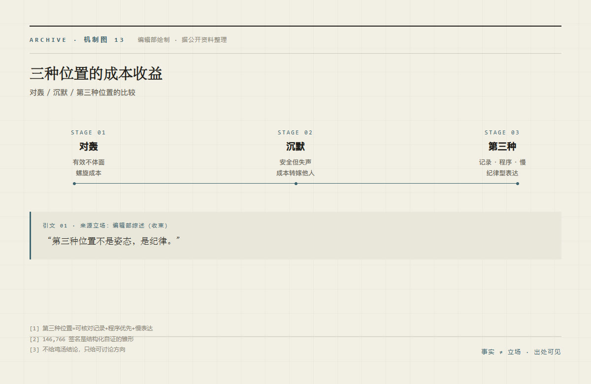

对轰和沉默之外，还有位置
收束 · 之一 · 范围：第三种位置的构成与代价。不给鸡汤结论，只给可讨论方向。
十二篇拆完，局面看上去很绝：讲道理贬值，对轰有代价，沉默是把成本转嫁给同标签的下一个人。三种出路里两种半是死的。收束篇的任务不是打鸡血，是回答一个有限的问题：在现有收益表不变的前提下，还有没有一种站位，既不投降也不自爆？本篇的回答是：有，但它不是新发明，它是三种旧纪律的组合——记录、程序、慢。叫它「第三种位置」。
先压住期待：第三种位置不保证赢。它在互动定价里依然是吃亏的，它只是把「亏」从「被围剿」换成「被无视」，并且回答一个对轰回答不了的问题：你留下了什么。
对轰与情绪叙事的燃料都是可燃的表述：断言、定性、表情、梗。它们烧得旺，也烧得快。记录型表达反着来——逐字引语、时间戳、可核对的数字、双口径并置（篇 12 的方法）。它不燃，所以互动差；但它烧不掉。本工作区的两个样本都验证过这条路：彩礼案的「原声实录」用 27 条逐字引语把态度刻度钉死在时间轴上，任凭后续叙事怎么改写，刻度不动；员工公开信用 146,766 个签名的四分类数据（员工 7,293 / 前任 1,356 / 股东 78,337 / 支持者 59,780）把「联署」这个模糊动作变成了可审计的名单[1]。记录的对抗性不是「反驳你」，是「你说的和发生的同时在场」。
记录有个隐性门槛要说明：它要求记录者对己方也不留情面。逐字引语会录下己方的失态，分类数据会暴露己方的水分。所以第三种位置从第一天起就反爽感——它是纪律，不是姿态[3]。
篇 06 拆过程序的困境：结论总是迟到。但收束时要把那句话翻过来看——程序慢，同时也是程序唯一的优势：它可质证、可推翻、留痕。第三种位置在行动上意味着：在舆论定性与程序结论冲突时，公开选择以程序为准，哪怕这在舆论场里当下很难看。这不是天真地信任司法（司法也有质量问题），是在两种都不完美的权威里，选那个可以纠错的。单方口述不可纠错，情绪定性不可纠错，程序再慢，纠错是它的本职。
程序优先还有一层日常含义：把「谁主张谁举证」用回日常争论。不是法律腔，是纪律——「你的判断，你的证据」。这一条在两性议题上对谁都适用，包括对本专题的读者与作者。
「慢」指的是表达节奏，不是效率：长文、连载、一年后的复盘、对旧结论的公开修订。慢表达的策略意义在于部分退出 CES 计价——不追热点窗口，不做情绪密度优化，把目标从「这一波赢」换成「三年后还成立」。它牺牲了即时可见度，换回一个对轰永远换不到的资产：可信度的复利。一个持续用记录与程序说话的账号，三年后被翻出来的旧文就是它的资产负债表；一个靠对轰起家的账号，旧文是合订本风险。
三个构件合起来，第三种位置的形象就出来了：可核对的记录者 + 程序优先的表态者 + 慢节奏的复盘者。它不是一个道德高地——它照样会被两头骂（对轰方骂你理客中，情绪方骂你洗地）——它是一个可居住的岗位。本专题本身就在试着住在这个岗位上：14 篇、引文标注、双口径并置、每篇给出口，包括这三篇收束。
引文 01 · 来源立场：编辑部综述（收束）
"第三种位置不是姿态，是纪律。"
—— 本篇的收束判断（编辑部综述）。姿态可以表演，纪律只能执行。

▲ 图 13：三种位置的成本收益 · 编辑部绘制。构件说明见注 [1][2][3]。
按纪律，把第三种位置的失败模式也写出来。失败模式一：被淹没。记录没人看，慢表达没有窗口，三年后旧文成立但当时零声量——这不是假想，是常态。失败模式二：被两头吃。纪律型表达在混战里是软目标，因为它既不还嘴又占着「理性」的招牌。失败模式三：自我感动。把「我在记录」当成免于行动的借口，用方法论的精致代替实际的声援或担责。三种失败模式都真实存在，第三种位置不豁免它们。
那么为什么还推荐它？因为比较对象不是「理想的胜利」，是另外两条路的实际终点：对轰的终点是全员不可信（篇 10），沉默的终点是把世界让给嗓门最大的人。第三种位置不赢，但它不输掉记录。公共讨论可以输掉很多轮，只要记录还在，下一轮就有地基。这话说得克制，是因为能承诺的只有这么多。
最后一篇（方法论）把这 14 篇沉淀成一套读者拿走就能用的拆解工具——包括它的适用边界：什么时候不该用这套方法。
注 · SOURCES
[1] 彩礼案原声实录（27 条逐字引语）、员工公开信 146,766 签名四分类，见本工作区《2026.11.11_28.8万彩礼谈崩》《2026.11.15_黄仁勋辞任与员工公开信》。数字来源为官网截图挖掘与公开传播内容。
[2] 「程序慢是唯一优势」「以程序为准的公开选择」为本文的规范性主张（属观点），非法律意见。
[3] 「第三种位置 = 记录 + 程序 + 慢」为本文提出的组合框架，系收束性判断，非既有理论。
[4] 三种失败模式（淹没 / 两头吃 / 自我感动）为本文的自我限制条款。
口径说明
本文为社会学观察，不站任何性别立场，作者性别不作为论证依据。本篇含规范性主张（观点），与事实分开标注；不给鸡汤结论，失败模式并陈。拆解机制是为了理解，不是行动指南。
出口：第三种位置今天就可以试运行——选一个你有立场的议题，做一次「只记录不表态」的练习：把双方原话、时间线、可核数字整理成一页，不加结论。做完你大概会发现两件事：事情比表态时复杂，而你比表态时清醒。这就是纪律的回报，不多，但真实。